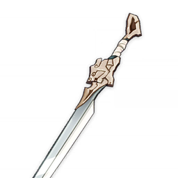

Weapons
Fillet Blade
Fillet Blade
3★
Sword
A sharp filleting knife. The blade is long, thin, and incredibly sharp.


Stats:
| Asc. | Lv. | Base ATK | ATK% |
|---|---|---|---|
| A0 | 1 | 39 | 7.7% |
| A6 | 90 | 401 | 35.2% |
| Click to expand... | |||
Refinements:
| Refinement | Desc |
|---|---|
| Gash R1 | On hit, has a 50% chance to deal 240% ATK DMG to a single opponent. Can only occur once every 15s. |
| Gash R2 | On hit, has a 50% chance to deal 400% ATK DMG to a single target. Can only occur once every 11s. |
| Click to expand... | |
Ascensions:
| Asc. | Mora | Items | ||
|---|---|---|---|---|
| A6 | 30000 | |||
| Click to expand... | ||||
Lore:
It was said that the Ticker Fish was a favorite among the people of Liyue.
As word caught on, somehow Ticker became Tiger.
Now, the real Ticker Fish is hard to come by,
but Tiger Fish fillets have become synonymous with delicious fish for the people of Liyue.